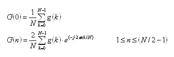
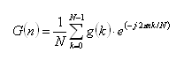

DSP_FFT
This API multiplies a specified array by a window function, then computes the array's spectrum by performing a FFT.
This API is defined in the header file /opt/hp93000/soc/prod_com/include/MAPI/libdsp.h.
Syntax
DSP_FFT(ARRAY_I& src, ARRAY_COMPLEX& result, INT window); DSP_FFT(INT *src, COMPLEX *result, INT size, INT window); DSP_FFT(ARRAY_D& src, ARRAY_COMPLEX& result, INT window); DSP_FFT(DOUBLE *src, COMPLEX *result, INT size, INT window); DSP_FFT(ARRAY_COMPLEX& src, ARRAY_COMPLEX& result, INT window); DSP_FFT(COMPLEX *src, COMPLEX *result, INT size, INT window);
I/O |
Parameter |
Description / Range |
|---|---|---|
I |
|
Source array
|
O |
|
Computed results
|
I |
|
Number of elements to be processed 8 ≤ size ≤ 2097152 Size can be any integer in the above range. In the case that size is not power of two, the Xpress data mode must be enabled in order to process the elements.
For complex type source array, size ≤ (size of result array) For other data types, size ≤ (size of result array) × 2
|
I |
|
Window RECT: Rectangular window (no window) HANNING: Hanning window HAMMING: Hamming window FLAT_TOP: Flat-top window FBLACKMAN: Blackman window See Window functions. |
Important points
- Typically, the
srcdata is a series of sampled time-domain data, and this function transforms this data into the corresponding frequency-domain spectrum data, and returns the results toresult.To reduce unnecessary spectrums that are caused by the discontinuity of terminal points of
src, theDSP_FFTfunction uses the Window functions: theDSP_FFTAPI multiplies thesrcdata by the specifiedwindow, then transforms the data, and returns the results toresult. The data is transformed by performing Fourier transformation calculus as shown in the following transformation equations:If
srcis not complex data:
where
g(k): 0≤ k ≤ N - 1G(n): 1 ≤ n ≤ N/2 - 1
N: size.
If
srcis complex data:
where
g(k): 0≤ k ≤ N - 1G(n): 0 ≤ n ≤ N - 1
N: size
Note that the
G(n): (1≤ n ≤ N/2 - 1) of not-complex data processing is double theG(n): (0≤ n ≤ N/2 - 1) of complex data processing. - If
srcis not complex data, the results are stored inresultin sequential order as follows:[0].real: DC component
[0].imag: Zero
[1].real: Cosine component of frequency bin 1
[1].imag: Sine component of frequency bin 1
. .
. .
[N/2-1].real: Cosine component of frequency bin (N/2-1)
[N/2-1].imag: Sine component of frequency bin (N/2-1)
where N is size.
If the array src contains
k cycles of a sinewave, result[k].real and
result[k].imag contain the cosine and sine components of the fundamental
frequency. The components of the i -th harmonic can be found in
result[i*k].
- If
srcis complex data, the results are stored inresultin sequential order as follows :[0].real: Real part of DC component
[0].imag: Imaginary part of DC component
[1].real: Cosine component of frequency bin 1
[1].imag: Sine component of frequency bin 1
. .
. .
[N/2].real: Cosine component of frequency bin (N/2)
[N/2].imag: Sine component of frequency bin (N/2)
. .
. .
[N-2].real: Cosine component of frequency bin (N-2)
[N-2].imag: Sine component of frequency bin (N-2)
[N-1].real: Cosine component of frequency bin (N-1)
[N-1].imag: Sine component of frequency bin (N-1)
where N is
size. - If
srcis complex data,srcandresultcan be the same array.
Example
DOUBLE time_array[512]; COMPLEX array2[256]; : DSP_FFT(time_array, array2, 512, RECT);
DSP_FFT
converts the 512 DOUBLE time_array elements into the sine and cosine frequency
components, and returns the results to COMPLEX arrayarray2 as follows:
[0].real: DC component
[0].imag: Zero
[1].real: Cosine component of frequency bin 1
[1].imag: Sine component of frequency bin 1
. .
. .
[255].real: Cosine component of frequency bin 255
[255].imag: Sine component of frequency bin 255
The parameter window = RECT, which specifies a rectangular
window.
Functional changes
- Introduced before SmarTest 6.3.2
- SmarTest 6.5.2: The size parameter is not restricted to the power of two.